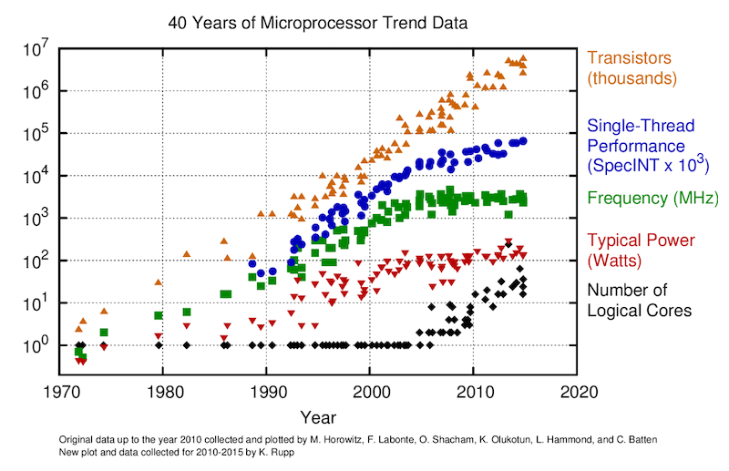

Agenda
üìö Parallel computing on CPUs & performance assessment, the \(T_\mathrm{eff}\) metric
üíª Unit testing in Julia
üöß Exercises:
CPU perf. codes for diffusion and acoustic waves
Unit tests and testset implementation
üëâ get started with exercises
Performance limiters
Effective memory throughput metric \(T_\mathrm{eff}\)
Parallel computing on CPUs
Shared memory parallelisation
GPUs are throughput-oriented systems
GPUs use their parallelism to hide latency
Some multi-core CPUs have many cores nowadays - similar challenges ?
Recall from lecture 1 ...
Use parallel computing (to address this):
The "memory wall" in ~ 2004
Single-core to multi-core devices

GPUs are massively parallel devices
SIMD machine (programmed using threads - SPMD) (more)
Further increases the Flop vs Bytes gap

Taking a look at a recent GPU and CPU:
Nvidia Tesla A100 GPU
AMD EPYC "Rome" 7282 (16 cores) CPU
| Device | TFLOP/s (FP64) | Memory BW TB/s |
|---|---|---|
| Tesla A100 | 9.7 | 1.55 |
| AMD EPYC 7282 | 0.7 | 0.085 |
Current GPUs (and CPUs) can do many more computations in a given amount of time than they can access numbers from main memory.
Quantify the imbalance:
\[ \frac{\mathrm{computation\;peak\;performance\;[TFLOP/s]}}{\mathrm{memory\;access\;peak\;performance\;[TB/s]}} × \mathrm{size\;of\;a\;number\;[Bytes]} \](Theoretical peak performance values as specified by the vendors can be used).
Back to our hardware:
| Device | TFLOP/s (FP64) | Memory BW TB/s | Imbalance (FP64) |
|---|---|---|---|
| Tesla A100 | 9.7 | 1.55 | 9.7 / 1.55 × 8 = 50 |
| AMD EPYC 7282 | 0.7 | 0.085 | 0.7 / 0.085 × 8 = 66 |
(here computed with double precision values)
Meaning: we can do 50 (GPU) and 66 (CPU) floating point operations per number accessed from main memory. Floating point operations are "for free" when we work in memory-bounded regimes
‚û° Requires to re-think the numerical implementation and solution strategies
Most algorithms require only a few operations or flops ...
... compared to the amount of numbers or bytes accessed from main memory.
First derivative example \(∂A / ∂x\):
If we "naively" compare the "cost" of an isolated evaluation of a finite-difference first derivative, e.g., computing a flux \(q\):
\[q = -D~\frac{∂A}{∂x}~,\]which in the discrete form reads q[ix] = -D*(A[ix+1]-A[ix])/dx.
The cost of evaluating q[ix] = -D*(A[ix+1]-A[ix])/dx:
1 reads + 1 write => \(2 × 8\) = 16 Bytes transferred
1 (fused) addition and division => 1 floating point operations
assuming:
\(D\), \(∂x\) are scalars
\(q\) and \(A\) are arrays of Float64 (read from main memory)
GPUs and CPUs perform 50 - 60 FLOP pro number accessed from main memory
First derivative evaluation requires to transfer 2 numbers per FLOP
The FLOP/s metric is no longer the most adequate for reporting the application performance of many modern applications on modern hardware.
Need for a memory throughput-based performance evaluation metric: \(T_\mathrm{eff}\) [GB/s]
‚û° Evaluate the performance of iterative stencil-based solvers.
The effective memory access \(A_\mathrm{eff}\) [GB]
Sum of:
twice the memory footprint of the unknown fields, \(D_\mathrm{u}\), (fields that depend on their own history and that need to be updated every iteration)
known fields, \(D_\mathrm{k}\), that do not change every iteration.
The effective memory access divided by the execution time per iteration, \(t_\mathrm{it}\) [sec], defines the effective memory throughput, \(T_\mathrm{eff}\) [GB/s]:
\[ A_\mathrm{eff} = 2~D_\mathrm{u} + D_\mathrm{k} \] \[ T_\mathrm{eff} = \frac{A_\mathrm{eff}}{t_\mathrm{it}} \]The upper bound of \(T_\mathrm{eff}\) is \(T_\mathrm{peak}\) as measured, e.g., by McCalpin, 1995 for CPUs or a GPU analogue.
Defining the \(T_\mathrm{eff}\) metric, we assume that:
we evaluate an iterative stencil-based solver,
the problem size is much larger than the cache sizes and
the usage of time blocking is not feasible or advantageous (reasonable for real-world applications).
As first task, we'll compute the \(T_\mathrm{eff}\) for the 2D diffusion code diffusion_2D.jl we are already familiar with (download the script if needed to get started).
To-do list:
copy diffusion_2D.jl and rename it to diffusion_2D_Teff.jl
add a timer
include the performance metric formulas
deactivate visualisation
üíª Let's get started
Use Base.time() to return the current timestamp
Define t_tic, the starting time, after 11 time steps to allow for "warmup"
Record the exact number of iterations (introduce e.g. niter)
Compute the elapsed time t_toc at the end of the time loop and report:
t_toc = Base.time() - t_tic
A_eff = (1*2)/1e9*nx*ny*sizeof(Float64) # Effective main memory access per iteration [GB]
t_it = t_toc/niter # Execution time per iteration [s]
T_eff = A_eff/t_it # Effective memory throughput [GB/s]Report t_toc, T_eff and niter at the end of the code, formatting output using @printf() macro.
Round T_eff to the 3rd significant digit.
@printf("Time = %1.3f sec, T_eff = %1.2f GB/s (niter = %d)\n", t_toc, round(T_eff, sigdigits=3), niter)Use keyword arguments ("kwargs") to allow for default behaviour
Define a do_visu flag set to false
@views function diffusion_2D(; do_visu=false)
if do_visu && (it % nout == 0)
...
end
return
end
diffusion_2D(; do_visu=false)So far so good, we have now a timer.
Let's also boost resolution to nx = ny = 512 and set ttot = 0.1 to have the code running ~1 sec.
In the next part, we'll work on a multi-threading implementation.
Towards implementing shared memory parallelisation using multi-threading capabilities of modern multi-core CPUs.
We'll work it out in 4 steps:
Precomputing scalars, removing divisions and casual arrays
Replacing flux arrays by macros
Back to loops I
Back to loops II - compute functions (kernels)
Precomputing scalars, removing divisions and casual arrays
As first, duplicate diffusion_2D_Teff.jl and rename it as diffusion_2D_perf.jl
First, replace D/dx and D/dy in the flux calculations by precomputed D_dx = D/dx and D_dy = D/dy in the fluxes.
Then, replace divisions /dx, /dy by inverse multiplications *_dx, *_dy where _dx, _dy = 1.0/dx, 1.0/dy.
Remove the dCdt array as we do not actually need it in the algorithm.
Replacing flux arrays by macros
As first, duplicate diffusion_2D_perf.jl and rename it as diffusion_2D_perf2.jl
Storing flux calculations in qx and qy arrays is not needed and produces additional read/write we want to avoid.
Let's create macros and call them in the time loop:
macro qx() esc(:( .-D_dx.*diff(C[:,2:end-1],dims=1) )) end
macro qy() esc(:( .-D_dy.*diff(C[2:end-1,:],dims=2) )) endMacro will be expanded at preprocessing stage (copy-paste)
Advantages of using macros vs functions:
easier syntax (no need to specify indices)
there can be a performance advantage (if functions are not inlined)
Also, we now have to ensure C is not read and written back in the same (will become important when enabling multi-threading).
Define C2, a copy of C, modify the physics computation line, and implement a pointer swap
C2 = copy(C)
# [...]
C2[2:end-1,2:end-1] .= C[2:end-1,2:end-1] .- dt.*(diff(@qx(),dims=1).*_dx .+ diff(@qy(),dims=2).*_dy)
C, C2 = C2, C # pointer swapBack to loops I
As first, duplicate diffusion_2D_perf2.jl and rename it as diffusion_2D_perf_loop.jl
The goal is now to write out the diffusion physics in a loop fashion over \(x\) and \(y\) dimensions.
Implement a nested loop, taking car of bounds and staggering.
for iy=1:size(C,2)-2
for ix=1:size(C,1)-2
C2[ix+1,iy+1] = C[ix+1,iy+1] - dt*( (@qx(ix+1,iy) - @qx(ix,iy))*_dx + (@qy(ix,iy+1) - @qy(ix,iy))*_dy )
end
endNote that macros can take arguments, here ix,iy, and need updated definition.
Macro argument can be used in definition appending $.
macro qx(ix,iy) esc(:( -D_dx*(C[$ix+1,$iy+1] - C[$ix,$iy+1]) )) end
macro qy(ix,iy) esc(:( -D_dy*(C[$ix+1,$iy+1] - C[$ix+1,$iy]) )) endPerformance is already quite better with the loop version. Reasons are that diff() are allocating tmp and that Julia is overall well optimised for executing loops.
Let's now implement the final step.
Back to loops II
Duplicate diffusion_2D_perf2_loop.jl and rename it as diffusion_2D_perf_loop_fun.jl
In this last step, the goal is to define a compute function to hold the physics calculations, and to call it within the time loop.
Create a compute!() function that takes input and output arrays and needed scalars as argument and returns nothing.
function compute!(C2, C, D_dx, D_dy, dt, _dx, _dy)
for iy=1:size(C,2)-2
for ix=1:size(C,1)-2
C2[ix+1,iy+1] = C[ix+1,iy+1] - dt*( (@qx(ix+1,iy) - @qx(ix,iy))*_dx + (@qy(ix,iy+1) - @qy(ix,iy))*_dy )
end
end
return
end! in their name, a Julia convention.The compute!() function can then be called within the time loop
compute!(C2, C, D_dx, D_dy, dt, _dx, _dy)This last implementation executes a bit faster as previous one, as functions allow Julia to further optimise during just-ahead-of-time compilation.
Let's now see how to implement multi-threading and use advanced vector extensions (AVX).
Julia ships with it's base feature the possibility to enable multi-threading.
The only 2 modifications needed to enable it in our code are:
Place Threads.@threads in front of the outer loop definition
Export the desired amount of threads, e.g., export JULIA_NUM_THREADS=4, to be activate prior to launching Julia (or executing the script from the shell)
Relying on Julia's LoopVectorization.jl package, it is possible to combine multi-threading with AVX optimisations, relying on extensions to the x86 instruction set architecture.
To enable it in our code:
Add using LoopVectorization at the top of the script
Replace Threads.@threads by @tturbo in front of the outer loop in the compute!() kernel
And here we go üöÄ
@inbounds in front of the compute statement, or running the scripts (or launching Julia) with the --check-bounds=no option.We discussed main performance limiters
We implemented the effective memory throughput metric \(T_\mathrm{eff}\)
We optimised the Julia 2D diffusion code (multi-threading and AVX)
@time macro which returns timing and allocation estimation. BenchmarkTools.jl package provides finer grained timing and benchmarking tooling, namely the @btime and @benchmark macros, among others.Test moduleBasic unit tests in Julia
Provides simple unit testing functionality
A way to assess if code is correct by checking that results are as expected
Helpful to ensure the code still works after changes
Can be used when developing
Should be used in package for CI
Simple unit testing can be performed with the @test and @test_throws macros:
using Test
@test trueTest PassedOr another example
@test [1, 2] + [2, 1] == [3, 3]Test PassedTesting an expression which is a call using infix syntax such as approximate comparisons
@test π ≈ 3.14 atol=0.01Test PassedFor example, suppose we want to check our new function square!(x) works as expected:
square!(x) = x^2square! (generic function with 1 method)If the condition is true, a Pass is returned:
@test square!(5) == 25Test PassedIf the condition is false, then a Fail is returned and an exception is thrown:
@test square!(5) == 20Test Failed at none:1
Expression: square!(5) == 20
Evaluated: 25 == 20
Test.FallbackTestSetException("There was an error during testing")The @testset macro can be used to group tests into sets.
All the tests in a test set will be run, and at the end of the test set a summary will be printed.
If any of the tests failed, or could not be evaluated due to an error, the test set will then throw a TestSetException.
@testset "trigonometric identities" begin
θ = 2/3*π
@test sin(-θ) ≈ -sin(θ)
@test cos(-θ) ≈ cos(θ)
@test sin(2θ) ≈ 2*sin(θ)*cos(θ)
@test cos(2θ) ≈ cos(θ)^2 - sin(θ)^2
end;Test Summary: | Pass Total
trigonometric identities | 4 4
Let's try it with our square!() function
square!(x) = x^2
@testset "Square Tests" begin
@test square!(5) == 25
@test square!("a") == "aa"
@test square!("bb") == "bbbb"
end;Test Summary: | Pass Total
Square Tests | 3 3
If we now introduce a bug
square!(x) = x^2
@testset "Square Tests" begin
@test square!(5) == 25
@test square!("a") == "aa"
@test square!("bb") == "bbbb"
@test square!(5) == 20
end;Square Tests: Test Failed at none:6
Expression: square!(5) == 20
Evaluated: 25 == 20
Stacktrace:
[...]
Test Summary: | Pass Fail Total
Square Tests | 3 1 4
Some tests did not pass: 3 passed, 1 failed, 0 errored, 0 broken.Then then the reporting tells us a test failed.
The Test module provides simple unit testing functionality.
Tests can be grouped into sets using @testset.
We'll later see how tests can be used in CI.
üëâ See Logistics for submission details.
The goal of this exercise is to:
Finalise the script discussed in class
In this first exercise, you will terminate the performance oriented implementation of the 2D diffusion scripts from lecture 5.
üëâ If needed, download the diffusion_2D.jl to get you started.
Create a new folder in your GitHub repository for this week's (lecture 5) exercises. In there, create a new subfolder diffusion2D where you will add following script:
diffusion_2D_Teff.jl (T_eff implementation)
diffusion_2D_perf.jl (scalar precomputations and removing dCdt)
diffusion_2D_perf2.jl (flux computation as macros)
diffusion_2D_loop.jl (loop version)
diffusion_2D_loop_fun.jl (physics computations in compute!() function)
üëâ See Logistics for submission details.
The goal of this exercise is to:
Apply the optimisation steps done for the diffusion 2D to the acoustic wave propagation 2D code (velocity-pressure formulation)
For this second exercise, you will implement a performance oriented implementation of the 2D acoustic scripts from lecture 5.
üëâ If needed, download the acoustic_2D.jl to get you started.
In the folder in your GitHub repository for this week's (lecture 5) exercises, create a new subfolder acoustic2D where you will add following script:
acoustic_2D_Teff.jl
Implement the T_eff metric to the acoustic wave in 2D. Since we are using the velocity-pressure formulation, think about how many arrays are read / written at every iterations and define A_Eff accordingly.
Use @printf() to report t_toc, T_eff and niter.
Boost the number of grid points to nx = ny = 512.
Implement a flag to deactivate visualisation using kwargs.
acoustic_2D_perf.jl
Replace divisions by multiplications.
When possible, fuse scalar computations in preprocessing.
acoustic_2D_perf_loop.jl
Perform the computations of Vx, Vy and P in nested loops. Take care of the staggering and loop range.
acoustic_2D_perf_loop_fun.jl
Move the physics computations inside functions (kernels) and call them within the time loop. Use the minimal amount of functions that would ensure correct results.
Implement multi-threading using both Threads.@threads and @tturbo (the latter from LoopVectorization.jl).
üëâ See Logistics for submission details.
The goal of this exercise is to:
Create a script to assess \(T_\mathrm{peak}\), using memory-copy
Assess \(T_\mathrm{peak}\) of your CPU
Perform a strong-scaling test: assess \(T_\mathrm{eff}\) for the diffusion 2D as function of number of grid points and implementation
For this exercise, you will write a code to assess the peak memory throughput of your CPU and run a strong scaling benchmark using the diffusion 2D codes and report performance.
In the diffusion2D folder, create a new script named memcopy.jl. You can use as starting point the diffusion_2D_loop_fun.jl script from lecture 5 (or exercise 1).
Rename the "main" function memcopy
Modify the script to only keep following in the initialisation:
# Numerics
nx, ny = 512, 512
nt = 10000
# Array initialisation
C = rand(Float64, nx, ny)
C2 = copy(C)
A = copy(C)Modify the compute!() function to perform the following operation C2 = C + A, replacing the previous calculations.
Update the A_eff formula accordingly.
Then, create a README.md file in the diffusion2D folder to report the results for each of the following tasks (including a .png of the figure when instructed)
 to insert a .png figure in the README.md.Report on a figure \(T_\mathrm{eff}\) of your memcopy.jl code as function of number of grid points nx × ny for the simple for loop, the Threads.@threads, and the @tturbo implementations. Vary nxand ny such that nx = ny = 16 * 2 .^ (1:8).
(\(T_\mathrm{eff}\) of your memcopy.jl code represents \(T_\mathrm{peak}\), the peak memory throughput you can achieve on your CPU for a given implementation.)
nt accordingly (you could also, e.g., make nt function of nx, ny). Ensure also to implement "warm-up" iterations.Add the above figure in a new section of the diffusion2D/README.md, and provide a minimal description of 1) the performed test, and 2) a short description of the result. Figure out the vendor-announced peak memory bandwidth for your CPU, add it to the figure and use it to discuss your results.
Repeat the strong scaling benchmark you just realised in Task 2 using the memcopy.jl code on the various diffusion 2D codes (perf2, perf_loop, perf_loop_fun - for, Threads.@threads, @tturbo for the latter).
Report on a figure \(T_\mathrm{eff}\) of the 5 diffusion 2D code implementations as function of number of grid points nx × ny. Vary nxand ny such that nx = ny = 16 * 2 .^ (1:8).
On the same figure, report also the memory copy values for the for, Threads.@threads, @tturbo implementation (as, e.g, dashed lines).
Add this second figure in a new section of the diffusion2D/README.md, and provide a minimal description of 1) the performed test, and 2) a short description of the result.
üëâ See Logistics for submission details.
The goal of this exercise is to:
Implement basic unit tests for the diffusion and acoustic 2D scripts
Group the tests in a test-set
For this exercise, you will implement a test set of basic unit tests to verify the implementation of the diffusion and acoustic 2D solvers.
In the diffusion2D folder, duplicate the diffusion_2D_perf_loop_fun.jl script and rename it diffusion_2D_test.jl.
Implement a test set in order to test C[xtest, ytest] and assess that the values returned are approximatively equal to the following ones for the given values of nx = ny.
xtest = [5, Int(cld(0.6*Lx, dx)), nx-10]
ytest = Int(cld(0.5*Ly, dy))for
nx = ny = 16 * 2 .^ (2:5)should match
nx, ny | C[xtest, ytest] |
|---|---|
64 | [1.28961441675812e-6 0.3403434055248243 0.000226725154067358] |
128 | [1.42876853096198e-7 0.3606848631942946 2.784022638919167e-6] |
256 | [3.82994869422046e-8 0.3515100977539851 2.070629144549965e-7] |
512 | [1.56975129887789e-8 0.3467239448747831 4.938759153492403e-8] |
Report the output of the test set as code block in a new section of the README.md in the diffusion2D folder.
README.md (more).